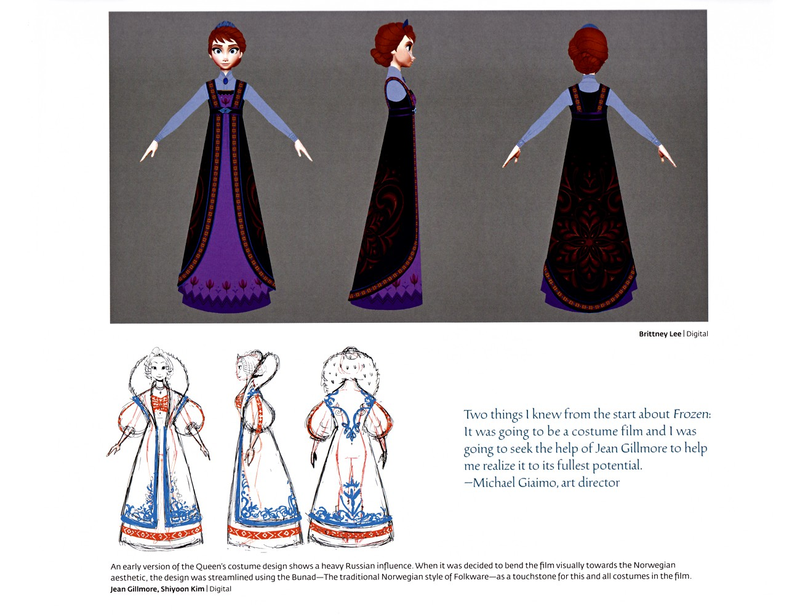

📖 设定集 · F1设定集
F1 图版 · 服装细节
F1 官方设定集图版 · p068–p076
5
本卷页数
🎨
设定集
中/英
双语
🖼️ F1 官方设定集 · 原书图版
F1 图版 · 服装细节
《The Art of Frozen》（Charles Solomon, Chronicle Books 2013） p068–p076
2
图版
p068–p076
原书页码
原书
扫描原图
笔记
逐页图注
🧵 服装章节的细节页：安娜与艾莎的服装设计、镇民与卫兵群像——bunad 民族服与 rosemaling 纹样如何织进每一件衣服。
👗 服装与镇民细节（p068–p076）

女王礼服：俄式影响与挪威化
早期女王礼服带有浓重俄式影响（黑外裙配红金卷草纹、深紫内裙、蓝袖、辫子髻）；更早的铅笔稿则是白裙、红滚边、胸衣与裙摆蓝 rosemaling，配毛皮镶边帽。当影片视觉转向挪威美学后，设计以 Bunad（挪威传统民间服饰）为基准简化，并成为全片服装的参照点。Giaimo 称一开始就知道这会是一部"服装电影"，并寻求 Je（F1设定集原页）

镇民服装概念稿
安娜裙装以 3×3 网格探索紫、粉、绿三套配色下的裙形、领口与刺绣变体；另含八位女性镇民（彩色民俗裙，正反转身）与八位男性镇民（蓝外套、绿马甲、深色帽，正反转身）的彩色概念稿。（F1设定集原页）
💡 图注说明
本页全部图版为《The Art of Frozen》（Charles Solomon, Chronicle Books 2013）原书扫描（原图复制，未压缩），图注（中文标题 + 要点首句）逐页取自官方设定集中文笔记，点击图片可查看原尺寸扫描。
📌 本页要点
你正在阅读《设定集》卷的「F1 图版 · 服装细节」。本页由电影正典、官方设定集与官方小说综合梳理，可作为该主题的速查入口；右侧目录可快速跳转到本页各小节。